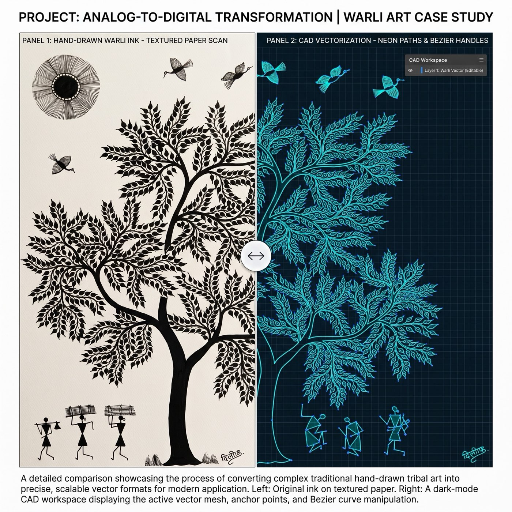
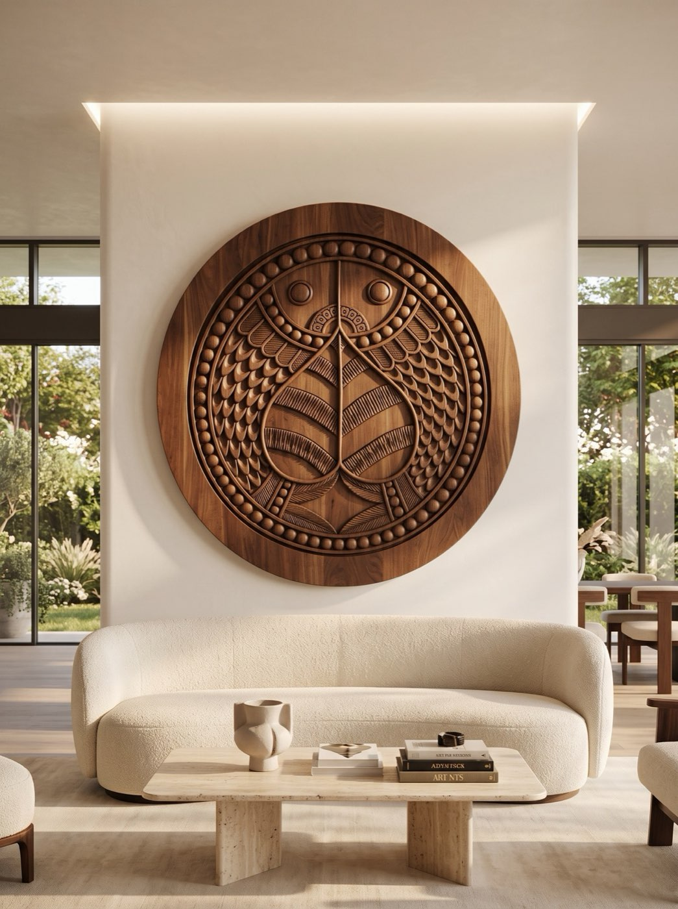

1
Physical Masterwork
Sourced directly from a master heritage artisan, this Warli Tree of Life composition uses elemental line density to symbolize growth, community, and ecological balance on 300 GSM cold-pressed paper.
Antarāla अन्तराल
Spatial Studies · the space between
One hand-drawn motif, engineered into feature walls, screens, acoustics, and licensed digital twins, with full artisan provenance.
Process · The Digital Twin Pipeline
One original drawing, carried unbroken from paper to vector geometry to a CNC-carved feature wall in a wellness sanctuary.

Sourced directly from a master heritage artisan, this Warli Tree of Life composition uses elemental line density to symbolize growth, community, and ecological balance on 300 GSM cold-pressed paper.

Reconstructed into 100% closed-path .DXF vectors and 3D .STL depth meshes for industrial CNC tooling bits.
Precision CNC-milled into High-Density Urethane (HDU) tooling board and hand-finished with Venetian lime plaster for a 3D bas-relief feature wall.
By maintaining an unbroken chain of provenance, Artha Indus Atelier ensures full artisan attribution and corporate ESG alignment while delivering site-specific, code-compliant finishes for high-end interiors.
Specification Study
ARTHA | matsya
By precision-vectorizing original hand-drawn artwork, Artha Indus Atelier joins ancient craft to modern digital fabrication and commercial specification.
In this spatial study, a single Madhubani Matsya (fish), a traditional symbol of fluidity and abundance, transforms across 5 distinct interior environments:

Execution: CNC-carved solid American walnut in deep 3D bas-relief.
Impact: Translates fine ink linework into organic wood grain, bringing acoustic warmth and tactile depth to a modern residential salon.
01 / 05
Turn the page, one motif across five typologies
01
Authenticated, museum-grade originals float-mounted for executive C-suites and gallery collections.
02
Artwork captured at 600 DPI and rebuilt as infinitely scalable vector geometry, engineered for wallcoverings, acoustic wallcoverings, bas-reliefs, 3D CNC millwork, and etched architectural glass.
The Collection
Warli · Executive
Concept study · available as a bespoke commission or digital-twin license
Best for Executive lobbies, C-suites & corporate reception.
When high-stakes environments are anchored by authentic human storytelling, the entire spatial energy shifts.
This custom large-scale feature piece brings the centuries-old lineage of Warli folk art sourced directly from traditional indigenous artisans into a modern, high-performance executive sanctuary.
Curatorial & Spatial Breakdown
Original artwork hand-drawn by master heritage artisans. Digitized and specified by Artha Indus Atelier.
ARTHA | mayūra
Concept study · available as a bespoke commission or digital-twin license
Best for Residential entryways & boutique hotel lobbies.
Room dividers shouldn’t just partition a space, they should introduce warmth, narrative, and architectural gravity.
In this concept mockup, we translated the traditional multi-peacock Mithila motif from a 300 gsm paper masterwork into a 3D CAD mesh, allowing it to be CNC-milled directly into a freestanding solid walnut entryway screen. The rich wood grain grounds the intricate line density of the original heritage art, turning a functional privacy screen into a permanent piece of spatial storytelling.
Specification Study
Original artwork hand-drawn by master heritage artisans. Digitized and specified by Artha Indus Atelier.
Warli · Light Sculpture
Concept study · available as a bespoke commission or digital-twin license
Best for Double-height atriums, corporate lobbies & healthcare atria.
What happens when an ancient indigenous watershed narrative meets modern lighting engineering?
In double-height atriums and expansive lobbies, flat walls can easily feel static. “The Harvest River”, a composition originated by the Warli community of Western India which uses minimalist geometric linework to celebrate human connection with water, land, and harvest.
By extracting the original 2D linework into a 3D surface depth mesh, we re-imagined the motif into a deeply carved plaster bas-relief. Concealed 24V LED diffusion tracks are recessed directly within the carved river channels and mountain contours, turning the installation into an illuminated wayfinding feature that draws the eye across the space.
Architectural & Lighting Specification Study
Master line art hand-drawn on 300 gsm paper by master heritage artisans. Digitized, engineered, and specified for commercial interiors by Artha Indus Atelier.
Spatial Flow · matsya
Concept study · available as a bespoke commission or digital-twin license
Best for Spa, hydrotherapy & wet-zone wellness suites.
Pictured here: a 36-inch architectural bas-relief based on the singular Matsya (sacred fish) Gond motif. By converting this complex ink geometry into a physical dimensional carving, the artwork transitions from paper to an immersive structural element.
By utilizing a minimalist monochrome palette and gentle, integrated backlighting, this installation paired with a hydrotherapy fountain introduces calming texture and biophilic storytelling without overwhelming the space.
Spatial Fabrication & B2B Hydrotherapy Specification Study
Bring story-driven serenity and dimensional craftsmanship to your next wellness or hospitality project.
Artha | vanam
Concept study · available as a bespoke commission or digital-twin license
Best for Pediatric suites, clinics & healthcare waiting areas.
Healthcare environments, from pediatric waiting suites to integrative wellness lounges, require a delicate visual balance: art that reduces patient anxiety without overwhelming the senses.
By distilling traditional Sohrai tribal storytelling into its most minimalist elements, this concept feature wall pairs soft clay pigments with generous negative space. Playful, stylized wildlife silhouettes and gentle leaf fronds create an approachable, soothing atmosphere that appeals equally to children and adults.
Healthcare & Material Specification Study
Transform clinical waiting environments into restorative, story-driven spaces.
ARTHA | alaṅkāra
Concept study · available as a bespoke commission or digital-twin license
Best for Wellness spas & serene hospitality walls.
Traditional Himalayan Thangka lineage contains some of the most fluid, atmospheric storytelling in classical art.
Here, sweeping celestial cloudscapes (cloud/wind motifs) are brought to the forefront in a restrained, restorative palette: soft sage green paired with delicate brushed liquid-gold linework. Applied across a curved sanctuary wall, the flowing geometry brings organic movement and visual calm to high-end wellness and hospitality interiors.
B2B Customization & Versatility Spatial Study
Discover the fluid, story-rich potential of Himalayan lineage for your next hospitality or wellness project.
ARTHA | araṇya
Concept study · available as a bespoke commission or digital-twin license
Best for Bars, cocktail lounges & experiential hospitality.
Traditional Gond storytelling thrives on wild imagination, folklore, and organic rhythm while making it the ultimate narrative feature for boutique coffee bars, cocktail lounges, and experiential hospitality spaces.
A spatial study of a Gond masterpiece, scaled with a custom jewel-toned palette across a feature wall. The intricate dot-and-stripe linework reveals three wild leopards prowling through a dense, bird-filled tree canopy, inviting guests to linger, discover hidden details, and photograph what they find. Available in classical monochrome, rich earth-pigment washes, or custom B2B Pantone color-matching for bespoke hospitality projects.
Spatial Study & B2B Licensing
Bring story-driven charm and playful energy to your next hospitality design.
ARTHA | maṇḍala
Concept study · available as a bespoke commission or digital-twin license
Best for Flagship hotel foyers & reception spaces.
Moving beyond flat surfaces. This 60-inch architectural feature translates the dual-wheel cosmic iconography of Saura tribal lineage into a 3D CNC-milled relief medallion finished in a matte, hand-troweled terracotta lime plaster.
Designed for flagship hotel foyers and reception spaces, the installation features an integrated perimeter halo LED channel, casting a soft, architectural glow across the limestone wall behind it.
Engineering & Fabrication Study
Original artwork hand-drawn by master heritage artisans. Digitized and specified by Artha Indus Atelier.
ARTHA | matsya
Concept study · available as a bespoke commission or digital-twin license
Best for Elevator banks, corridors & vertical transitions.
Circulation zones and elevator banks are too often treated as utilitarian afterthoughts in commercial design. Here, a delicate vertical vine of Madhubani Matsya (fish) motifs in brushed gold transforms a dark slate wall into an intentional, story-rich transit feature.
In classical South Asian iconography, the fish symbolizes flow, adaptability, and prosperity. Entwined in a continuous upward vine alongside dark bronze elevator doors, the geometry subtly mirrors the physical movement of the space, bringing biophilic rhythm to a modern architectural threshold.
Spatial Specifications Study
Original artwork hand-drawn by master heritage artisans. Digitized and specified by Artha Indus Atelier.
ARTHA | vanam
Concept study · available as a bespoke commission or digital-twin license
Best for Executive zones & confidential lounges.
Privacy and performance for C-suite environments: a Kalamkari botanical masterwork, deeply etched into CSI 09 84 00 acoustic felt panels.
Engineered for standard specification in US corporate design, these panels deliver 0.75 NRC (Noise Reduction Coefficient) sound absorption, effectively bridging high-design aesthetics with evidence-based acoustic criteria for focused executive zones and confidential lounges.
By converting fine-line masterworks into precision-etched acoustic textures, our atelier enables architects to integrate story-driven cultural heritage directly into the building’s performance specifications.
Architectural & Technical Specification Study
Original artwork hand-drawn by master heritage artisans. Digitized and specified by Artha Indus Atelier.
ARTHA | rekhā
Concept study · available as a bespoke commission or digital-twin license
Best for High-ceiling lounges & open circulation zones.
Where executive acoustics meet ancient spatial rhythm. In this concept study, traditional Warli tribal geometry, celebrating community, movement, and organic cadence, is translated into a multi-layered, 3D bas-relief acoustic feature wall wrapping a flagship suite.
Engineered specifically for high-ceiling lounges and open circulation zones, this spatial integration pairs high sound attenuation with the warmth of line art, proving that high-performance acoustics can serve as a primary artistic centerpiece.
By converting fine-line masterworks into multi-depth vector CAD profiles, our studio enables interior architects to specify custom 3D acoustic felt installations across complex curved architecture.
Architectural & Engineering Specification Study
Original artwork hand-drawn by master heritage artisans. Digitized and specified by Artha Indus Atelier.
ARTHA | maṇḍala
Concept study · available as a bespoke commission or digital-twin license
Best for Executive reception corridors, hospitality arrival sequences & private residence galleries.
In this curatorial study, the iconic Warli Tārpā dance, a centuries-old indigenous motif celebrating community, harvest, and the infinite spiral of time, is translated into an oversized, high-contrast focal piece anchoring a minimalist gallery threshold.
Curated specifically for executive reception corridors, luxury hospitality arrival sequences, and private residence galleries, the composition creates an immediate visual anchor. The centrifugal energy of the hand-rendered dancers provides an organic counterpoint to the linear weight of textured sandstone walls and honed stone flooring, engaging the viewer in a state of restorative, rhythmic pause.
By working directly with master tribal artists to adapt intricate folk motifs into restrained, monochromatic palettes, our atelier bridges rural heritage craft with contemporary architectural scale.
Architectural & Curatorial Specification Study
Original artwork hand-drawn by master heritage artisans. Digitized and specified by Artha Indus Atelier.
ARTHA | vanam
Concept study · available as a bespoke commission or digital-twin license
Best for Hydrotherapy suites, vitality pools & spa wet zones.
Where the restorative presence of ancient flora meets modern aquatic architecture. In this hydrotherapy suite study, the vanam composition is embedded into a high-performance architectural resin panel set behind a tranquil vitality pool.
Our vectorization process optimizes linework for high-resolution interlayer printing and laser-etched translucency within cast polymer substrates.
Architectural & Engineering Specification Study
Original artwork hand-drawn by master heritage artisans. Digitized and specified by Artha Indus Atelier.
ARTHA | vanam
Concept study · available as a bespoke commission or digital-twin license
Best for Meditation spaces, recovery lounges & tea sanctuaries.
Where neuroaesthetic restorative theory translates into tactile wall architecture. In this wellness lounge study, continuous Kalamkari vine motifs are translated into an expansive, seamless commercial wallcovering wrapping curved walls.
Engineered to reduce cognitive fatigue in meditation spaces, recovery lounges, and tea sanctuaries, the hand-drawn self-similar fractal patterns encourage “soft fascination”, allowing directed attention to rest while enveloping the room in biophilic elegance.
By vectorizing hand-drawn linework into seamless repeating patterns, our atelier provides interior designers with scalable, continuous-roll wallcovering files.
Architectural & Engineering Specification Study
Original artwork hand-drawn by master heritage artisans. Digitized and specified by Artha Indus Atelier.
ARTHA | vṛkṣa
Concept study · available as a bespoke commission or digital-twin license
Best for Thermal suites, shower enclosures & wellness balustrades.
Where thermal sanctuary design meets contemplative sacred geometry. In this spa study, the elongated silhouette and nested borders of a Pattachitra Vriksha are etched onto structural glass privacy partitions dividing hydrotherapy zones.
Designed for high-humidity, moisture-rich wellness environments, the sandblasted botanical motif provides visual privacy while allowing soft, diffused light to pass through, creating an environment of soft fascination and profound mental calm.
Our studio isolates intricate border geometries into modular, repeating vector friezes, allowing specifiers to wrap entire glass suites, shower doors, and exterior wellness balustrades.
Architectural & Engineering Specification Study
Original artwork hand-drawn by master heritage artisans. Digitized and specified by Artha Indus Atelier.
ARTHA | vṛkṣa
Concept study · available as a bespoke commission or digital-twin license
Best for Gallery-scale archival framing, laser-cut screens & sculptural surfaces.
The Tree of Life in its purest, most essential form. In this curatorial study, the sacred Vriksha, drawn from centuries of Odishan Pattachitra lineage, is distilled down to its core botanical architecture: a singular vertical axis rising into a rhythmic, ascending canopy of hand-rendered foliage.
By isolating the central tree silhouette from peripheral ornamentation, the motif transitions into a bold, modern architectural anchor. The bilateral symmetry and self-similar fractal geometry of the layered leaves engage “soft fascination”, quieting cognitive fatigue and establishing an effortless sense of grounded permanence within the built environment.
Our studio extracts and vectorizes these botanical geometries from original masterworks, enabling specifiers to integrate the pure Tree of Life across gallery-scale archival framing, laser-cut screens, and sculptural architectural surfaces.
Architectural & Curatorial Specification Study
Original artwork hand-drawn by master heritage artisans. Digitized and specified by Artha Indus Atelier.
ARTHA | araṇya
Concept study · available as a bespoke commission or digital-twin license
Best for Cocktail bars, hotel arrival bars & hospitality focal walls.
Where monumental wildlife symbolism anchors nightlife architecture. In this concept study, the majestic Gaja (elephant) and its flourishing botanical canopy are converted into a precision-etched, darkened bronze feature screen behind an upscale cocktail bar.
Designed to serve as the undeniable architectural focal point of a hospitality interior, the composition pairs traditional royal iconography with industrial metalwork, offering a commanding sense of scale that balances dark marble countertops and rich cognac leather seating.
By translating hand-rendered artisan ink lines into DXF profiles, our atelier delivers production-ready vector assets for large-scale architectural metals, decorative grilles, and custom back-bar cladding.
Architectural & Engineering Specification Study
Original artwork hand-drawn by master heritage artisans. Digitized and specified by Artha Indus Atelier.
No studies match that combination. or send us your elevation →
The 2026 Executive Lookbook: the full collection in one place.
Request the LookbookNext
Every study is available as a bespoke physical commission or an enterprise digital-twin license.